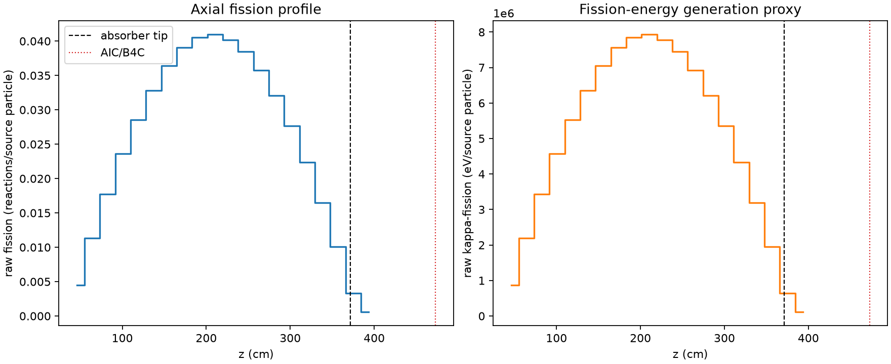
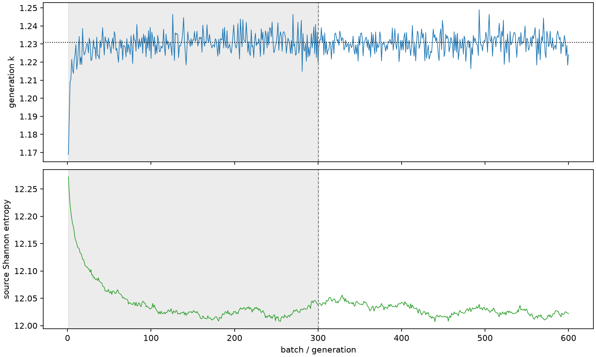

| field | value |
|---|---|
| experiment | V2-STAGE_256_OGRENCI_02-0032 |
| k | 1.230837976236493 |
| MC standard error | 0.0001876444748199184 |
| seconds | 921.6727817099891 |
| acceptance | not_assessed |
| convergence | review_required |
Completed is output integrity only; physical and statistical review required. Zero tallies do not prove zero production or zero uncertainty.
| diagnostic | value |
|---|---|
| geometric fuel voxels | 5280 |
| zero fission tally voxels | 0 |
| low signal fuel voxels | 0 |
| low signal fission share | 0.0 |
| low signal kappa share | 0.0 |
| important fission share | 0.9500517072121498 |
| previous filter included | 5280 |
| duration estimate s | 1562.5173488400023 |
| actual minus estimate s | -640.8445671300133 |
| fission relative MC error | statistics |
|---|---|
| all_geometric_fuel | {"voxels": 5280, "positive_mean_voxels": 5280, "zero_mean_voxels": 0, "undefined_relative_error_voxels": 0, "median": 0.010794964540342851, "p95": 0.035871692306368115, "maximum": 0.09258125822454544} |
| low_signal | {"voxels": 0, "positive_mean_voxels": 0, "zero_mean_voxels": 0, "undefined_relative_error_voxels": 0, "median": null, "p95": null, "maximum": null} |
| important_95pct | {"voxels": 4066, "positive_mean_voxels": 4066, "zero_mean_voxels": 0, "undefined_relative_error_voxels": 0, "median": 0.009961390245618318, "p95": 0.014511718677091452, "maximum": 0.01803205662214115} |
| outside_previous_filter | {"voxels": 0, "positive_mean_voxels": 0, "zero_mean_voxels": 0, "undefined_relative_error_voxels": 0, "median": null, "p95": null, "maximum": null} |
| kappa_fission relative MC error | statistics |
|---|---|
| all_geometric_fuel | {"voxels": 5280, "positive_mean_voxels": 5280, "zero_mean_voxels": 0, "undefined_relative_error_voxels": 0, "median": 0.010782511969213307, "p95": 0.03582570547964074, "maximum": 0.09242063661084411} |
| low_signal | {"voxels": 0, "positive_mean_voxels": 0, "zero_mean_voxels": 0, "undefined_relative_error_voxels": 0, "median": null, "p95": null, "maximum": null} |
| important_95pct | {"voxels": 4066, "positive_mean_voxels": 4066, "zero_mean_voxels": 0, "undefined_relative_error_voxels": 0, "median": 0.009950462558804512, "p95": 0.014496580790822805, "maximum": 0.018011455061456818} |
| outside_previous_filter | {"voxels": 0, "positive_mean_voxels": 0, "zero_mean_voxels": 0, "undefined_relative_error_voxels": 0, "median": null, "p95": null, "maximum": null} |
| axial bin | fission share | kappa-fission share |
|---|---|---|
| 1 | 0.0089178185306879 | 0.008918247815609943 |
| 2 | 0.022524187950016823 | 0.022524223827964998 |
| 3 | 0.0352463986544888 | 0.03524642698670461 |
| 4 | 0.04702015710612783 | 0.047020040619587165 |
| 5 | 0.05681196166880372 | 0.05681190789638964 |
| 6 | 0.06527164748541738 | 0.06527181760217894 |
| 7 | 0.07245757552728513 | 0.07245724786234323 |
| 8 | 0.07774216934930428 | 0.07774198551566772 |
| 9 | 0.0807212240722946 | 0.0807210349749659 |
| 10 | 0.08148109824152111 | 0.08148086021815575 |
| 11 | 0.07995081730925048 | 0.07995069105567074 |
| 12 | 0.07662137072447664 | 0.07662114519402327 |
| 13 | 0.07115230140890798 | 0.07115206315645307 |
| 14 | 0.06389778378987249 | 0.0638975762679393 |
| 15 | 0.05504085243870017 | 0.05504081950887044 |
| 16 | 0.04451352386644265 | 0.04451348132592716 |
| 17 | 0.032758013389632884 | 0.032757977602802565 |
| 18 | 0.020120480526465652 | 0.020120419416289777 |
| 19 | 0.0065581700222842685 | 0.006559151274277002 |
| 20 | 0.0011924479380193461 | 0.0011928818781790568 |
Histories include the inactive-to-active transition at batch 300. kappa-fission approximates fission energy production, not total heat deposition.

